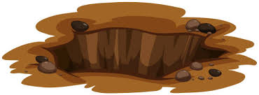

You walk to the back of the castle and find a boulder barely covering the edges of a hole under the castle walls. Intrigued, you go up to the hole and look inside. It's very dark and looks badly dug. But! This could be your way into the castle. What do you do?

Slide down the hole
Go back